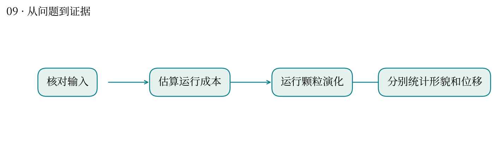
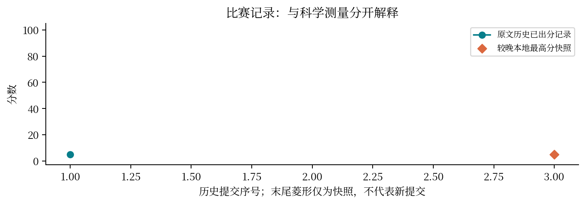

现实中想解决什么：制造 SiC 纳米颗粒时，怎样让颗粒形状与批次质量更可控？
从计算到应用：原子层面的生长/重排 → 颗粒形貌分布 → 材料加工与性能的一致性。
这次实际做到哪一步：本题保存的证据主要是预检与失败记录，缺少完整形貌轨迹，尚不能证明形状控制成功。
还缺什么：先补齐可复现轨迹与形貌统计，再联系具体工艺与实测性能；不能用示意动画替代结果。
高温下，一颗纳米颗粒如何变形，表面原子如何移动？
最高分快照：4.97 · 2026-10-12T01:11:24+08:00
题目要求跟踪 8 nm SiC 颗粒的形貌变化与早期表面扩散。形状和扩散是不同观测量，需要分别定义。
已有输入缺失排查、CPU/GPU 吞吐预检与提交评分记录；本次未在已核查目录中找到足以重画完整形貌演化的原始坐标轨迹。
历史得分约 4.968。此题提供过程图和成绩记录，不用示意原子动画冒充这次 SiC 结果。
质心漂移和整体转动会污染位移；表面原子的选择规则、早晚时间窗与扩散拟合区间必须固定。
类似你研究发育或处理前后样本：先明确比较的对象和时间窗，再讨论变化。单细胞伪时序不是真实 MD 时间，二者只能在组织分析流程上类比。
输入可得性与算力可执行性是可复现性问题；缺少原始轨迹时，无法独立判定形貌与扩散结论。


| attempt | 提交时间 | 分数 | 状态 |
|---|---|---|---|
| 52506 | 10-11 02:44:27 | 4.968 | 已出分 |
| 55041 | 10-11 17:53:33 | — | 排队中 |
源文件 SHA256 见 证据清单；用 scripts/build.py 重建图表。